VirtualBox создание и настройка виртуальной машины
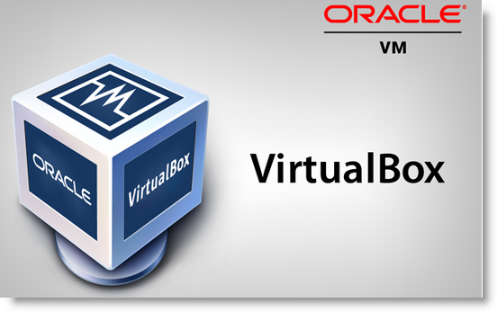
Я использую виртуальную машину для проверки работы новых программ и экспериментов, чтобы не делать рискованные операции на рабочем сервере. VurtualBoxopen in new window - программа в которой можно создавать и запускать виртуальные машины. На них можно поставить любую ОС и работать с ней как будто она находится на отдельной машине.
Операционная система на которой установлен VirtualBox называется хостовой. ОС которая выполняется на виртуальной машине - гостевой.
Настройка VirtualBox
Заходим в настройки и устанавливаем путь в котором будут хранится файлы виртуальных машин. Для одной виртуальной машины желательно иметь свободными на диске от 8гб для Linux и от 20гб для Windows.
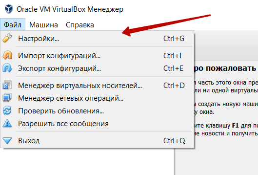
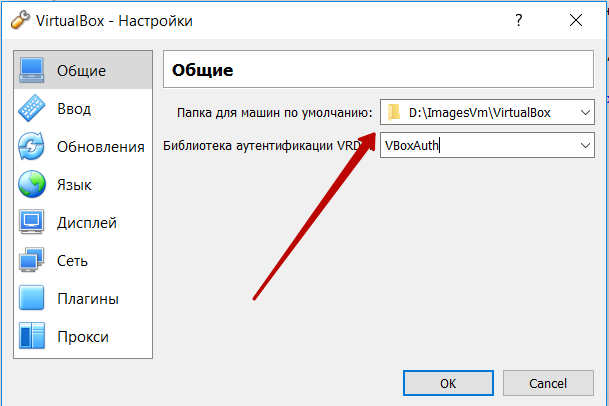
Создание новой виртуальной машины
Запускаем VirtualBox, нажимаем кнопку Создать на панели инструментов.
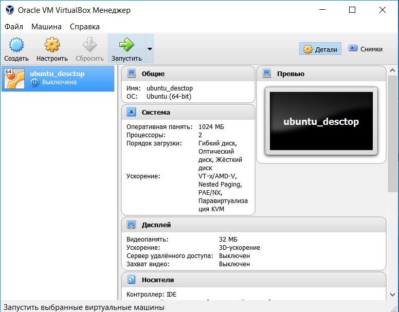
Вводим название виртуальной машины и выбираем тип операционной системы
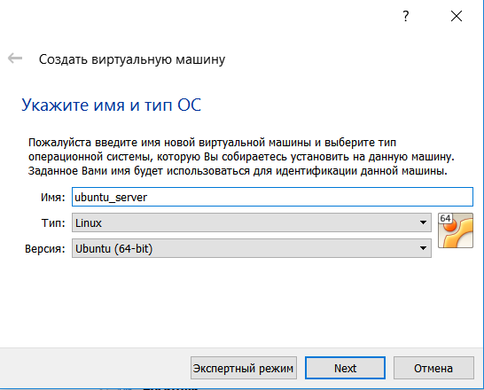
Устанавливаем размер оперативной памяти, можно оставить по умолчанию.
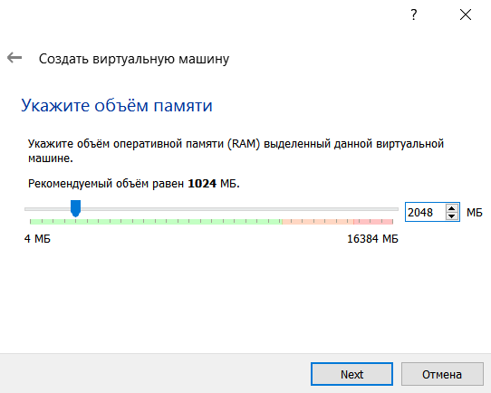
Выбираем создать новый жесткий диск. Жесткий диск для виртуальной машины будет сохранен в виде файла. По умолчанию он сохранится в каталог указанный при настройке VirtualBox.
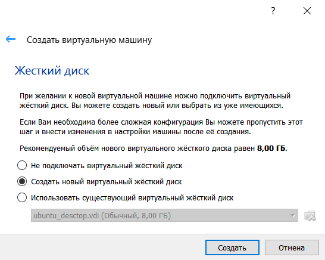
Выбор типа жесткого диска. Оставляем значение по умолчанию - VDI.
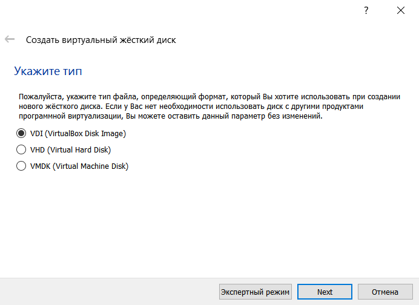
Устанавливаем формат хранения. Я выбираю динамический, он быстрее создается.
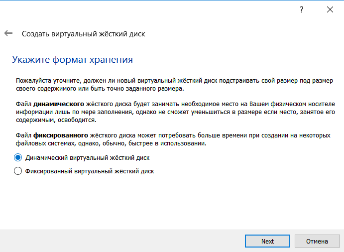
А вот и выбор пути по которому сохранить файл жесткого диска.
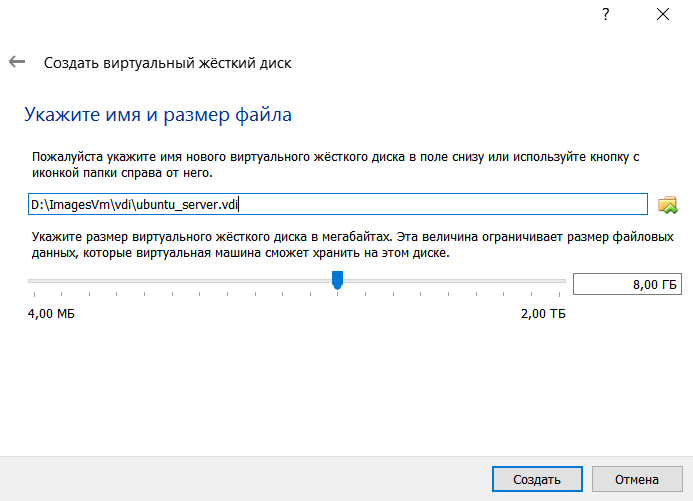
Настройка виртуальной машины
Виртуальная машина создана. Перед установкой операционной системы ВМ требует дополнительной настройки.
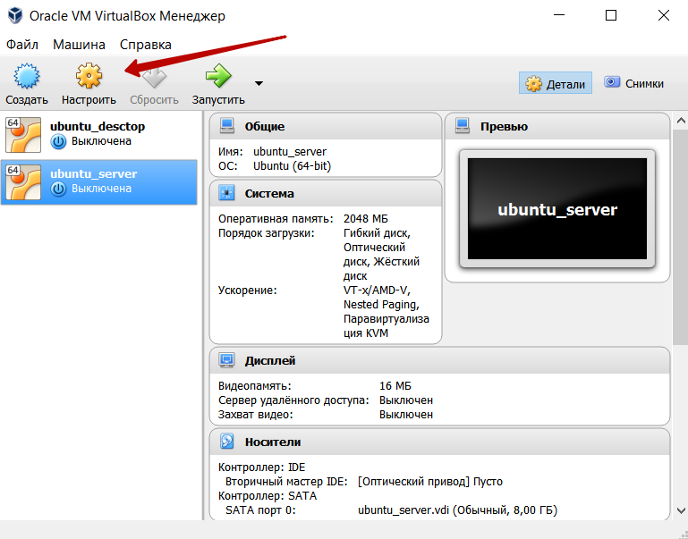
Форма Сеть->Адаптер 1 изменяем тип подключения на Сетевой мост. Это нужно чтобы с гостевой операционной системы был доступен интернет, и одновременно мы могли с хостовой операционной системы обращаться к гостевой по сети.

На форме Носители выбираем файл iso образа операционной системы которую собираемся устанавливать.
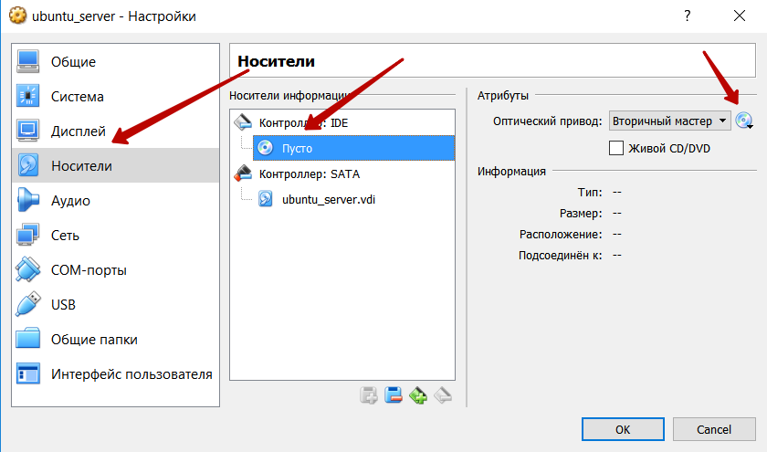